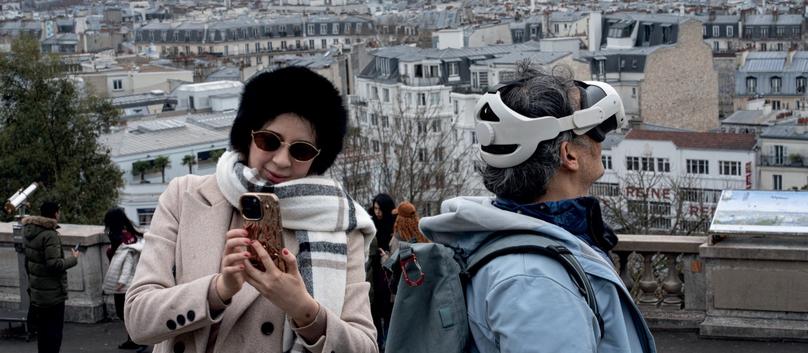

<!-- @dsCard group="Espaces et séries" height=760 width=1280 subtitle="espaces-augmentes.html" -->
<div class="ds-preview" style="position:relative;min-height:100%">
<section id="page-5" class="page5" aria-labelledby="page5-title">
            <div class="page5__container">
                
                <div class="page5__header">
                    <h2 id="page5-title" class="page5__title">Réinventer<br>L'espace des récits</h2>
                </div>

                
                <div class="page5__image-wrapper">
                    
                </div>

                
                <div class="page5__footer">
                    <p class="page5__subtitle">Marcher, observer, se laisser surprendre</p>
                </div>
            </div>
        </section>
</div>
<script>document.querySelectorAll('.reveal').forEach(function(e){e.classList.add('reveal--visible')});document.querySelectorAll('img[loading=lazy]').forEach(function(i){i.loading='eager'});</script>
